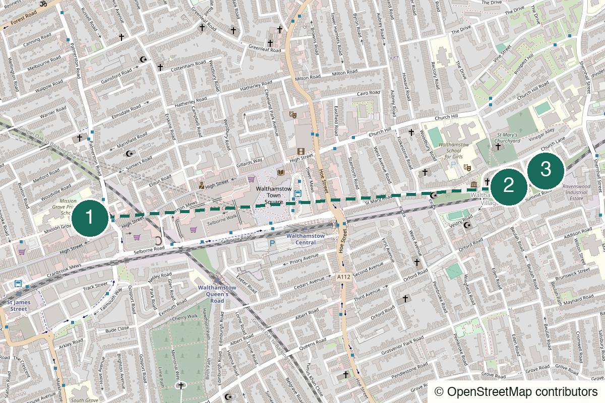

London Not yet field-walked
Crystal Palace
Views, eccentric park details and a pub finish that earns itself.
Start Crystal Palace
Not yet field-walked · verify live details
Start with noise and food, then let the afternoon become smaller and more local.
No field notes from readers yet — share one if you walk it.
Walthamstow Central – Use the town-centre exit and check that the market is trading before starting.
Walthamstow Market
Open the whole walk (opens in a new tab)
Confirm market trading, Sunday alternatives and venue hours.
We never ask for your location.
Use the market as the social ignition, then walk towards quieter streets and finish somewhere local. The route should get calmer as it goes.
The first section is busy; this is not a hushed village fantasy.
Better for an established date than a quiet first meeting.
The strongest use case; the noisy start gives the group something to react to.
Possible alone, though the market section is the main event.

High Street, Walthamstow, London E17
From the start Walk from Walthamstow Central to the High Street and check that the market is trading before committing to food here.
Eat standing up from the stall with the local queue. The market version needs a trading-day check; on Sunday, switch to the God’s Own Junkyard + Wild Card Brewery backup instead of pretending the route is unchanged.
Walk here from the station to Walthamstow Market (opens in a new tab)
Orford Road, Walthamstow Village, London E17
From the previous stop Walk east from the market until the volume drops, then use Orford Road as the village pin.
Ancient House, St Mary’s churchyard and the smaller-street gear change. Verify museum and shop opening days before making any interior stop essential.
Walk from the previous stop to Orford Road – Walthamstow Village (opens in a new tab)
9 Orford Road, London E17 9NL
From the previous stop Continue along Orford Road to number 9. For more going on, use Ye Olde Rose and Crown on Hoe Street as the alternative.
The smaller, local finish after the market. Confirm hours and events before going.
Walk from the previous stop to The Nag’s Head (opens in a new tab)
Nearest practical station: Wood Street rail or Walthamstow Central
Wood Street is practical from the Village; buses down Hoe Street return you to Walthamstow Central.
Open Wood Street rail (opens in a new tab)Open Walthamstow Central (opens in a new tab)
Saturday daytime or summer evening
Food matters here; verify trading days before relying on it.
A cheaper daylight version.
The complete social version.
Use a shorter market section and move quickly to a verified indoor finish.
Stay locally for another drink rather than crossing London again.
Return to Walthamstow Central after the market.
Noise first. Village later.
Help keep it useful
Closed gates, changed hours and the point where you bailed are more useful than polite applause.